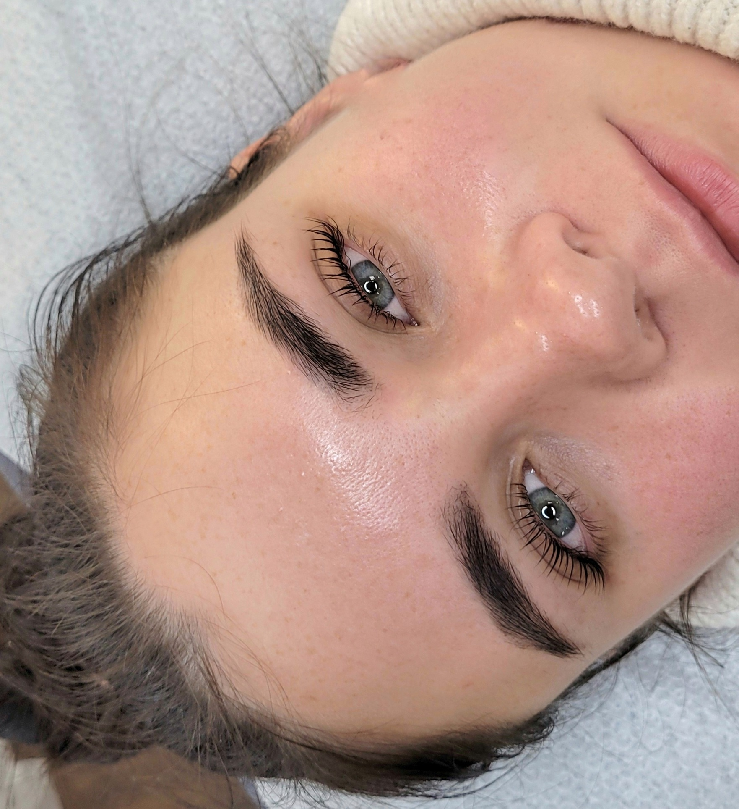
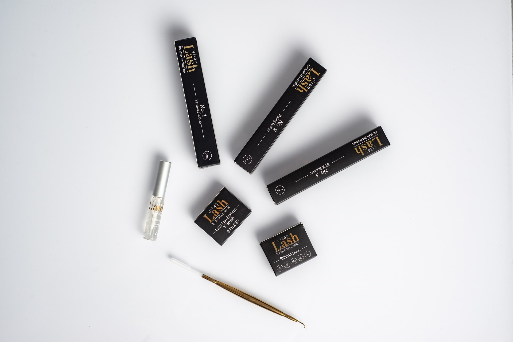

<div class="container-fluid">
  <div class="container">
    <section>
      <h3 class="text-center pb-5">Blasktienų Laminavimas</h3>
      <div class="row">
        <div class="col-md-6">
          <p>
            Blakstienų laminavimas yra sparčiai išpopuliarėjusi procedūra, kuri
            tinka visoms klientėms vertinančioms natūralumą, kurios nori
            išraiškingesnių akių nenaudojant priaugintų blakstienų.
          </p>

          <p>
            Blakstienų laminavimo procedūra tinka trumpoms, tiesioms, retoms ar
            ilgoms blakstienoms. Ši procedūra taip pat tinkama toms moterims,
            kurios nemėgsta dirbtinio priauginim ar turi alergija klijams bei
            nori paryškinti ir sustiprinti turimas blakstienas.
          </p>

          <p>
            Blakstienų laminavimo procedūra - tai natūralių blakstienų pakėlimas
            nuo šaknų (užrietimas) ir prisotinimas vitaminais ir
            mikroelementais. Blakstienų laminavimas suteikia natūralioms
            blakstienoms riestumo, tankumo ir ilgumo, vizualiai atveria ir
            padidina akis
          </p>

          <p>Blakstienų laminavimo procedūra rekomenduojama:</p>

          <ul>
            <li>Tiesiai ar žemyn augančioms blakstienoms;</li>
            <li>Norinčioms natūralesnio vaizdo, nei priaugintų blakstienų;</li>
            <li>Norint atgaivinti pavargusias, nusilpusias blakstienas.</li>
          </ul>

          <p>
            Po procedūros blakstienų ryškumas išlieka apie kelias savaitės, bet
            pats efektas, riestumas ir sodrumas išsilaiko net iki 6savaičių.
            Blakstienų laminavimo metu yra naudojami papildomi maitinamieji/
            drėkinamieji serumai. Po procedūros blakstienos atrodo ryškesnės ir
            ilgesnės, akys įgauną gražų žvilgsniį.
          </p>

          <p>Kam reikalinga drėkinimo sistema?</p>

          <ul>
            <li>
              Serumo paskirtis - pripildyti blakstienas drėkinamaisiais
              komponentais, kurių pagalba blakstienos įgaus drėgmės - atrodys
              sveikos bei žvilgančios.
            </li>
            <li>Atstatomas blakstienų PH.</li>
          </ul>

          <p>
            Procedūra atliekama su Lash Vitae blakstienų lamination sistema.
          </p>

          <p>
            VITAE BEAUTY - tai aukščiausios kokybės blakstienų ir antakių
            laminavimo bei blakstienų priauginimo produktai, kurie yra sukurti,
            patikrinti bei įregistruoti Švedijoje.
          </p>

          <p class="text-size">
            <i
              >*Lash Vitae prekinis ženklas yra notifikuotas Švedijoje ir
              atitinka visus ES standartus( nėra formaldehidų, parabenų, visi
              produktai yra hipoalerginiai).</i
            >
          </p>
        </div>
        <div class="col-md-6 text-center mb-5">
          
          <hr />
          
        </div>
      </div>
    </section>
  </div>
</div>
